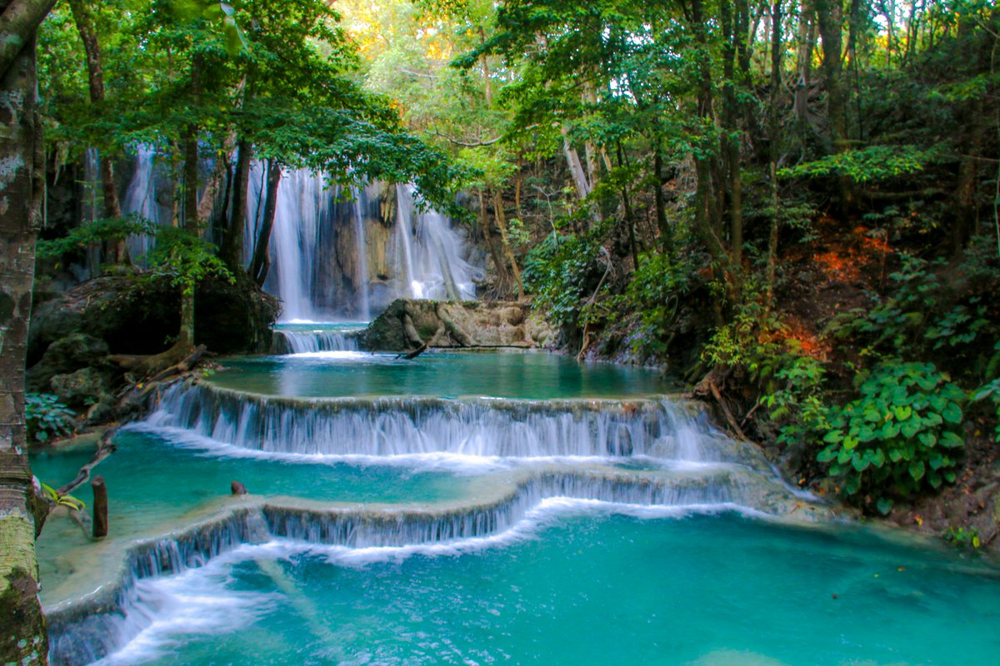

Article
Pulau Kenawa

Pulau Kenawa memiliki luas sebesar 15 hektare dengan garis pantai membentang sejauh sekitar 1,73 kilometer terletak di Kabupaten Sumbawa Barat, Provinsi Nusa Tenggara Barat (NTB). Selama ini, Pulau Kenawa identik dengan wisata bukit dan padang savananya, namun ternyata pantainya tidak kalah menarik, tenang dan bersih. Diyakini kalau sudah sampai di Pantai Kenawa, anda tidak bisa melewatkan kesempatan terjun mandi ke laut atau untuk sekedar berendam di pantai tersebut. Saking bening airnya, kita bisa melihat ikan dan binatang bawah laut dengan mata telanjang, kata Imelda salah satu wisatawan yang menikmati Pantai Kenawa.
Air Terjun Mata Jitu
Tersembunyi di balik Hutan Pulau Moyo, Kabupaten Sumbawa, Nusa Tenggara Barat, gemercik air sayup-sayup terdengar dalam kesunyian alam. Air Terjun Mata Jitu, air terjun yang keindahannya bisa memukau siapa saja yang datang ke kawasan ini. Pemandangan asri lengkap dengan pepohonan hijau alami membuat Air Terjun Mata Jitu menjadi primadona di Pulau Moyo. Air terjun yang telah menjadi bagian cagar alam Indonesia ini konon telah terbentuk jutaan tahun lalu. Perpaduan air terjun yang berwarna hijau tua dan muda seakan-akan menghipnotis Anda untuk menceburkan diri dan bermain air di dalam air terjun ini. Air Terjun Mata Jitu memiliki empat undak dan tujuh kolam. Oleh penduduk setempat, “mata jitu” diartikan sebagai mata air yang jatuhnya tepat mengenai kolam di bawahnya.